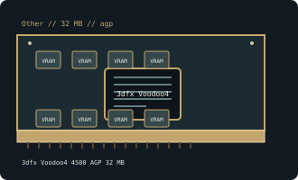

[ OTHER // INDIVIDUAL GPU RECORD ]
3dfx Voodoo4 4500 AGP 32 MB
2000; single VSA-100, 2 TMUs; 32 MB SDRAM, 128-bit.

Recorded specifications
| Catalog identity | 3dfx Voodoo4 4500 AGP 32 MB |
|---|---|
| Model-specific specification | 2000; single VSA-100, 2 TMUs; 32 MB SDRAM, 128-bit; AGP 4x (3.3 V); ~15 W, slot powered. |
| Vendor-first catalog | Other vendor directory |
| Model-family index | Other vendors vendor directory |
Compatibility and maintenance
Single-chip Voodoo4, unlike multi-chip Voodoo5. Check 3.3 V AGP key/support, heatsink and preserve Glide driver; PCI 4500 is another interface.
Sources & further reading
- TechPowerUp 3dfx Voodoo4 4500 AGP specificationsModel/family technical or historical reference; confirm the exact board revision and OEM label.
- PhilsComputerLab — The 3DFX Voodoo4 4500Independent video review; treat as supplementary context, not primary manufacturer documentation.